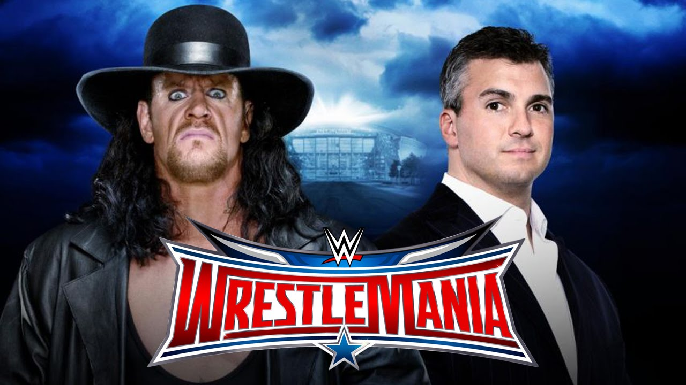

NEWS UPDATES
- Shinsuke Nakamura appears on NXT
- WWE Smackdown Spoilers, March 17th, 2016
- Live WWE RAW review, March 14th, 2016
- WWE Roadblock Review, March 12th, 2016
- Natalya vs. Charlotte added to WWE Roadblock
- Review for WWE RAW, March 8th, 2016
- Citrus Bowl in Orlando will host WrestleMania 33
- Stan Hansen officially announced as 2016 WWE Hall of Fame Inductee
- Jacqueline officially announced as 2016 WWE Hall of Fame Inductee

Shinsuke Nakamura Appears on NXT!
Shinsuke Nakamura made an appearance via satellite on this week's episode of NXT. He made an appearance because the match between he and Sami Zayn at NXT Takeover: Dallas was made official.
CRAIG'S CORNER
Shouldn't WWE be using the Undertaker to make one of the younger wrestlers into a star?
it OK for WWE to be using Shane McMahon in the second biggest match at Wrestlemania and not one of WWE's younger talents?
Click here to continue